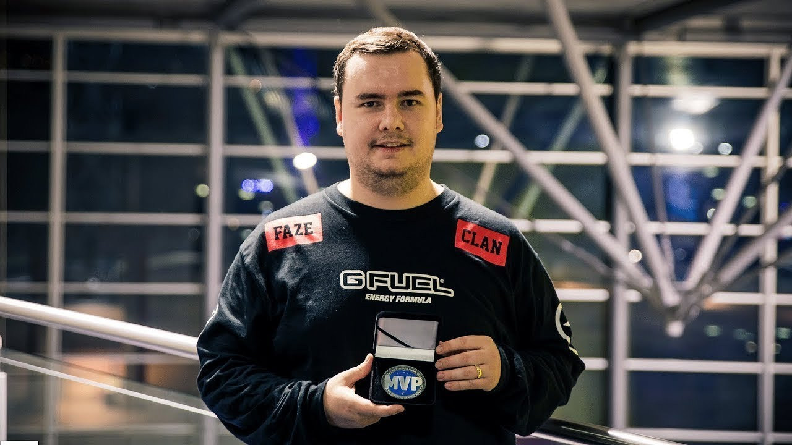

Ладислав Ковач (словацк. Ladislav Kovac; 9 июля 1991[1], Братислава) — профессиональный словацкий киберспортсмен, известный под псевдонимом GuardiaN. Профессиональный игрок Counter-Strike, Counter-Strike: Source и Counter-Strike: Global Offensive. На данный момент является одним из самых результативных снайперов в дисциплине Counter-Strike: Global Offensive.
Ладислав впервые попробовал играть в Counter-Strike когда ему было 8 лет. Примерно через 4 года он начал играть в любительских командах. Это были коллективы zTs и notorix. Чуть позже Ладислав со своим братом Францишеком «tri0» Ковачем начал играть в команде IQFIGHTERS, которая вскоре была подписана мультигейминговой организацией Faberi Bellatores. Команда успешно выступала на местных турнирах, однако не показала результатов на международной CS-сцене. В 15 лет GuardiaN стал лучшим снайпером Словакии, выиграв турнир формата 1on1, организованный киберспортивным порталом United-Games[2].В 2008 году, в связи с отсутствием на местном уровне крупных чемпионатов по 1.6, Ладислав решил попробовать себя в Counter Strike: Source. Он играл в любительской команде Corecell, которая заняла третье место на чемпионате Creative League, и через несколько дней стала частью организации DEFEATERS. Также GuardiaN впервые проявил себя на международной арене, играя на Чемпионате Европы, в составе национальной сборной Словакии. Состав DEFEATERS стал одним из самых сильных в чехословацком регионе, однако в январе 2009 года Ковач покидает команду из-за конфликта со своим тиммейтом. Вскоре после этого команда теряет поддержку организации и полностью распадается. Но сам Ладислав долго без дела не сидел: на перспективного словака обратила внимание одна из сильнейших европейских команд Reason Gaming, которая потеряла двух своих игроков, и нуждалась в новом снайпере. Такая замена усилила этот состав, и он принёс немало титулов для своей организации в период 2009—2010 годов.В 2010 году, после неудачного выступления на DSRack LAN #2, Reason Gaming отказались от сотрудничества с составом, и команда продолжила играть под флагом организации OX ENERMAX. Спустя некоторое время Ковач решает оставить Source и вернуться к игре Counter-Strike 1.6. Со своей новой командой BEASTS Ладислав покоряет несколько местных LAN-турниров. Несмотря на успешный старт, уже в апреле 2012 года он завершает свою карьеру, мотивируя это тем, что «потерял вкус к игре». Но через два месяца, в июне, 2012 Ковач возвращается и играет в составе команды BEASTS на ланах в Чехии, а также едет миксом на лан в Венгрию. В августе он заявляет, что вместе со своей командой намерен попробовать себя в новой версии игры Counter Strike: Global Offensive. Перспективный коллектив сразу подписывает организация eternal PlayerZ. Однако через несколько месяцев команда переходит под знамёна сербского мультигейминга myDGB.net. GuardiaN и компания заявляют о себе, как об одном из сильнейших составов Европы, занимая призовые места на двух крупных чемпионатах. Неожиданностью становится то, что 3DMAX анонсируют свой CS:GO дивизион, в который входят игроки из myDGB. Но после серии неудачных турниров организация распускает команду, и GuardiaN пробует в себя в миксе TCM-Gaming. А затем его приглашают в русскоязычный коллектив Virtus.pro. После распада Virtus.pro, Ладислав пробует себя в нескольких миксах, но не задерживается ни в одном из них. В декабре 2013 года присоединяется к мультигеймингу Natus Vincere. В июле 2017 года, после серии неудачных турниров, Ковач покидает команду Na’Vi, и уже в августе переходит в интернациональный состав американской организации FaZe Clan.
aVi довольно слабо провели 2013 год: команда не выиграла ни одного турнира, и заработала менее десятка призовых мест. Летом коллектив покинули ключевые игроки: снайпер Егор «markeloff» Маркелов и лучший стрелок команды Иоанн «Edward» Сухарёв. Молодые игроки Денис «seized» Костин и Антон «kibaken» Колесников не смогли сильно улучшить результаты команды на международной арене: год завершился полным провалом на мажор-турнире DreamHack Winter 2013. В декабре 2013 года организации приняла решение пригласить к себе GuardiaN’а, который последние пять месяцев не мог найти для себя стабильную команду. а также Edwarda’а, которого кикнули из Astana Dragons. Анонс состава состоялся 9 декабря. В тот же день составу предстояло сыграть 4 онлайн матча в рамках SLTV StarSeries Season VIII, из которых NaVi смогли выиграть 2. По результатам онлайн-квалификаций команда заняла шестое место в ладдере, и не смогла выйти на LAN-финалы. Однако благодаря отказу от участия LGB и Clan-Mystik, NaVi получили слот, и одержали второе место на своём дебютном лане.Команда долгое время показывает нестабильную игру. Состав смог попасть на мажор EMS One Katowice 2014 через СНГ-квалификации, но лан был снова провален: NaVi опять не вышли из группы. Свой первый титул они получили лишь в мае на SLTV StarSeries. С переменным успехом команда играет онлайн и LAN турниры, однако это не приносит других весомых достижений в копилку организации в первой половине года. В августе NaVi вновь участвуют на мажоре (теперь это ESL One Cologne). Они наконец-то смогли выйти из группы и обеспечить себе прямой инвайт на следующий турнир. Команда очень быстро прогрессировала: в октябре получили свой второй титул, одержав победу на Game Show League, заняли четвёртое место на чемпионате мира Electronic Sports World Cup и вошли в топ 4 на последнем мажоре года DreamHack Winter 2014. GuardiaN занял одиннадцатую строчку в рейтинге от HLTV.org, став единственным игроком из своей команды попавшим в топ 20.